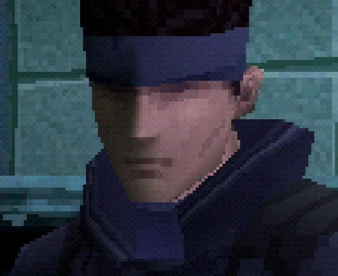
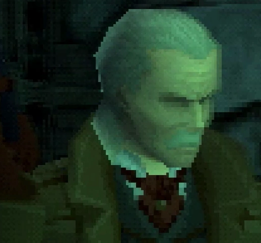
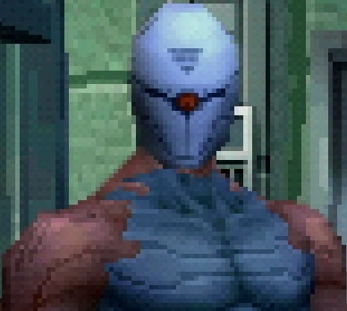
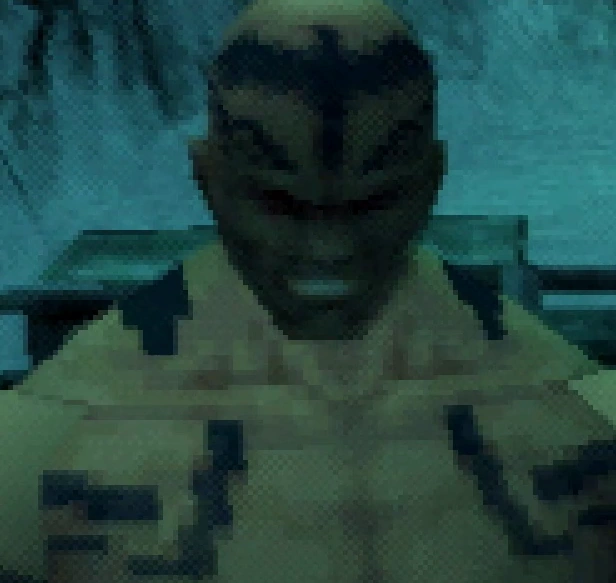

WITAJ W ŚWIECIE METAL GEAR!
Metal Gear to przełomowa seria gier wideo stworzona przez Hideo Kojimę, która zdefiniowała gatunek skradanek (stealth action). Od swojego debiutu w 1998 roku na konsoli PlayStation, seria zasłynęła z głębokiej, filmowej fabuły, złożonych postaci i innowacyjnej mechaniki rozgrywki.
Gracze wcielają się w legendarnych żołnierzy, takich jak Solid Snake czy Big Boss, aby zinfiltrować bazy wroga, unikać wykrycia i zapobiegać globalnym katastrofom nuklearnym. Fabuła porusza skomplikowane tematy, takie jak genetyka, dezinformacja, natura wojny i dziedzictwo, które przechodzi z pokolenia na pokolenie.
Metal Gear Solid na PlaySatation całkowicie zrewolucjonizował podejście do fabuły w grach wideo, udowadniając, że mogą one być medium do opowiadania historii z taką samą głębią i artystyczną ambicją jak film. Przed jego premierą fabuła często była tylko tłem dla akcji; po nim stała się jednym z najważniejszych filarów interaktywnej rozrywki.
Przełom polegał na potraktowaniu gry jak interaktywnego filmu. Hideo Kojima, jako miłośnik kinematografii, chciał połączyć infantylny na owy czas świat gier z pełnym artystycznej głębi światem kina. Wykorzystał on długie, w pełni udźwiękowione przerywniki filmowe nie jako przerywniki w rozgrywce, ale jako jej integralną część. Użycie profesjonalnego dubbingu, przemyślanej "pracy kamery" i epickiej, orkiestrowej muzyki budowało emocjonalne zaangażowanie na poziomie niespotykanym dotąd w grach.
To wszystko sprawia, że mimo upływu lat Metal Gear Solid pozostaje zaskakująco grywalną i angażującą grą wideo. Zachęcam do ogrania!
FABUŁA METAL GEAR SOLID
Akcja gry rzuca nas w sam środek mroźnej Alaski, na wyspę Shadow Moses. Legendarny żołnierz, Solid Snake, zostaje wyciągnięty z emerytury, aby zinfiltrować bazę nuklearną przejętą przez zbuntowany oddział sił specjalnych FOXHOUND. Jego misją jest uratowanie zakładników i zneutralizowanie zagrożenia, jakim jest mobilna głowica jądrowa – Metal Gear REX. Fabuła gry rozwija się poprzez serię konfrontacji z charyzmatycznymi członkami FOXHOUND, a każde starcie to nie tylko walka, ale i ważny fragment głębszej, filozoficznej opowieści.
Revolver Ocelot – Sadystyczny Rewolwerowiec
Pierwsza poważna konfrontacja Snake'a to starcie z Ocelotem, specjalistą od tortur i mistrzem rewolweru. Walka z nim to lekcja taktyki i wprowadzenie w brutalny świat FOXHOUND. To tutaj po raz pierwszy pojawia się tajemniczy Cyborg Ninja, którego interwencja ratuje Snake'a, ale jednocześnie sygnalizuje, że na wyspie działa więcej niż jedna siła, a misja jest o wiele bardziej skomplikowana, niż się wydaje.
Cyborg Ninja – Duch z Przeszłości
Spotkanie z Ninją to jeden z najbardziej emocjonalnych momentów gry. Ta postać, uwięziona w cybernetycznym pancerzu, okazuje się być Gray Foxem – niegdyś przyjacielem i towarzyszem broni Snake'a, którego ten był zmuszony zabić. Walka z nim nie jest starciem z wrogiem, lecz tragicznym tańcem z duchem przeszłości. Fox, poszukujący ukojenia w walce, wprowadza do fabuły motywy winy, odkupienia i utraconego człowieczeństwa.
Psycho Mantis – Władca Umysłów
– Władca Umysłów
Konfrontacja z Psycho Mantisem to czysty geniusz narracyjny i projektowy. Ten potężny telepata nie tylko atakuje Snake'a w grze, ale także przełamuje czwartą ścianę, zwracając się bezpośrednio do gracza, czytając jego kartę pamięci i komentując jego styl gry. Jego tragiczna historia o traumatycznym dzieciństwie dodaje głębi postaci, pokazując, że członkowie FOXHOUND nie są zwykłymi terrorystami, lecz ludźmi złamanymi przez wojnę i własne demony.
Sniper Wolf – Piękno i Śmierć
– Piękno i Śmierć
Sniper Wolf to postać, która wzbudza w graczu konflikt moralny. To bezwzględna snajperka, ale jej historia – jako kurdyjskiej sieroty wojennej przygarniętej przez legendarnego Big Bossa – nadaje jej ludzką twarz. Jej śmierć to jedna z najbardziej poruszających scen w grze, w której Snake okazuje szacunek pokonanemu wrogowi. Wolf symbolizuje tragedię żołnierzy, którzy stają się ofiarami wojen, w których nigdy nie chcieli brać udziału.
Vulcan Raven – Szaman i Gigant
Druga walka z potężnym Vulcanem Ravenem ma wymiar mistyczny. Ten szaman o ogromnej sile fizycznej postrzega walkę jako duchowy test. Przed śmiercią przekazuje Snake'owi kluczowe informacje o prawdziwym celu misji i wyjawia, że DARPA Chief, z którym Snake rozmawiał, był w rzeczywistości przebranym agentem. Słowa Ravena pogłębiają atmosferę spisku i dezinformacji, uświadamiając Snake'owi, że jest tylko pionkiem w znacznie większej grze.
Liquid Snake i Metal Gear REX – Starcie Braci
i Metal Gear REX – Starcie Braci
Finałowa konfrontacja to walka z liderem FOXHOUND, Liquid Snake'em, który pilotuje mecha Metal Gear REX. Tutaj na jaw wychodzi główny motyw fabularny: obaj są "synami" legendarnego Big Bossa, klonami stworzonymi w ramach tajnego projektu. Liquid, przekonany o swojej genetycznej niższości, pała nienawiścią do Solid Snake'a, co napędza jego dążenie do zniszczenia. Walka ta nie jest tylko o los świata, ale staje się osobistym starciem o tożsamość, przeznaczenie i dziedzictwo. To kulminacja filozoficznych pytań o to, czy nasze życie jest zdeterminowane przez geny, czy przez wolę.